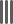

<mat-drawer-container class="example-container mat-typography" autosize class='sidenav-height'>
    <mat-drawer #drawer mode="side" disableClose="true" opened="true">
        <div class="row custom-height">
            <mat-icon *ngIf="isExpanded" class="sidenav-icon" aria-label="Menu" (click)="closeSideNav()">menu</mat-icon>
            <mat-icon *ngIf="!isExpanded" class="sidenav-closeicon" mat-list-icon></mat-icon>
            <h2 *ngIf="isExpanded" class="sidenav-txt color-main">Main Menu</h2>
        </div>
        <mat-nav-list>
            <mat-list-item *ngFor='let item of sidenavItems'>
                <div class="hoverColor"></div>
                <mat-icon mat-list-icon></mat-icon>
                <h4 class="sidenav-content color-main" mat-line *ngIf="isExpanded">{{item.name}}</h4>
                <mat-divider *ngIf="isExpanded"></mat-divider>
            </mat-list-item>
        </mat-nav-list>
    </mat-drawer>

    <div class="example-sidenav-content">
        <ng-content>

        </ng-content>
    </div>
</mat-drawer-container>